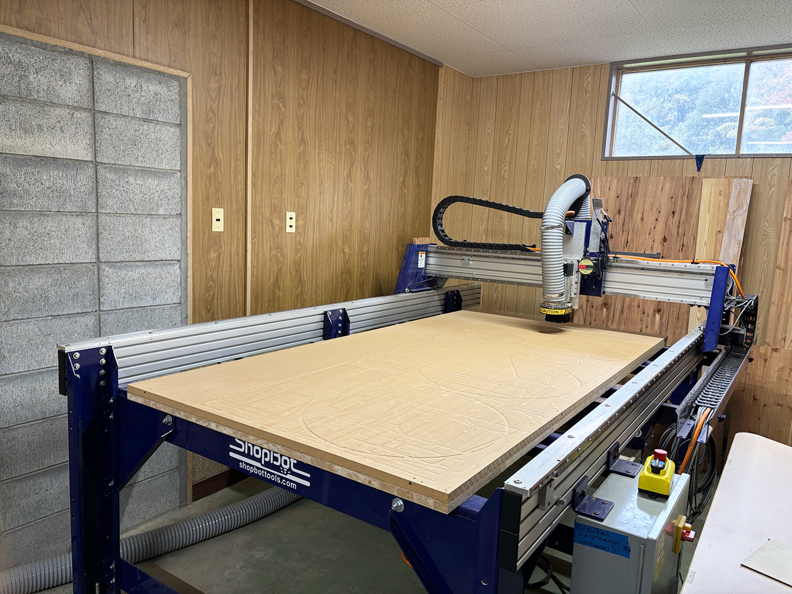
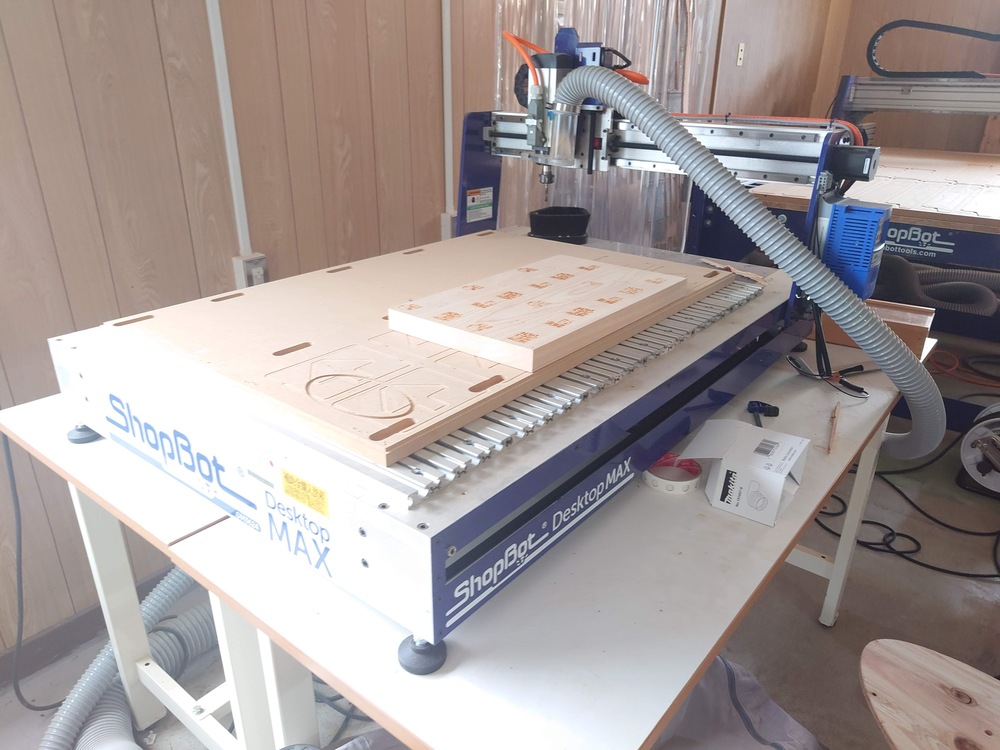
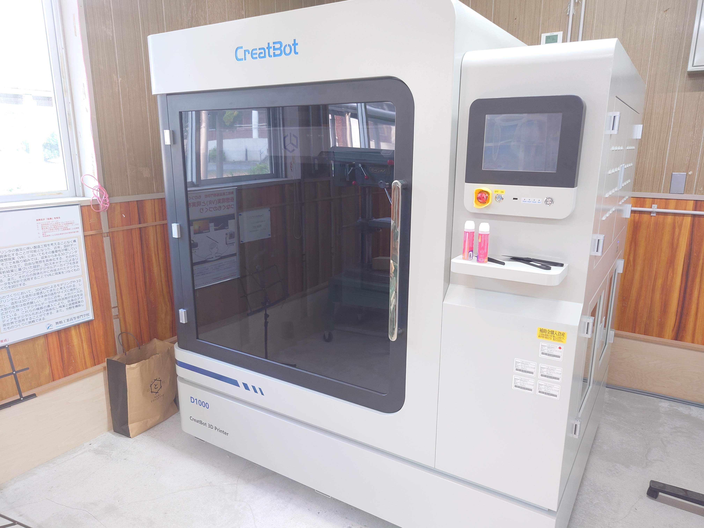
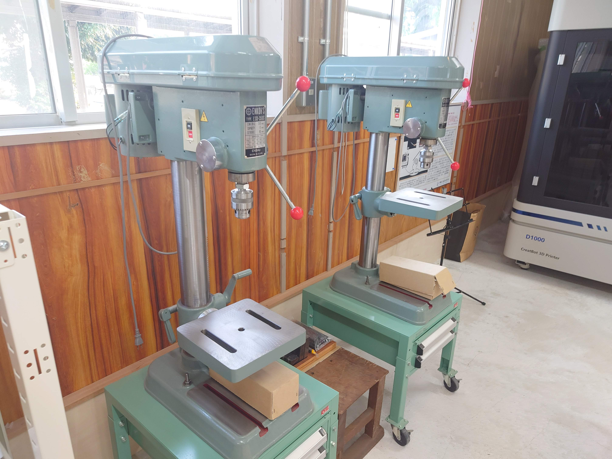
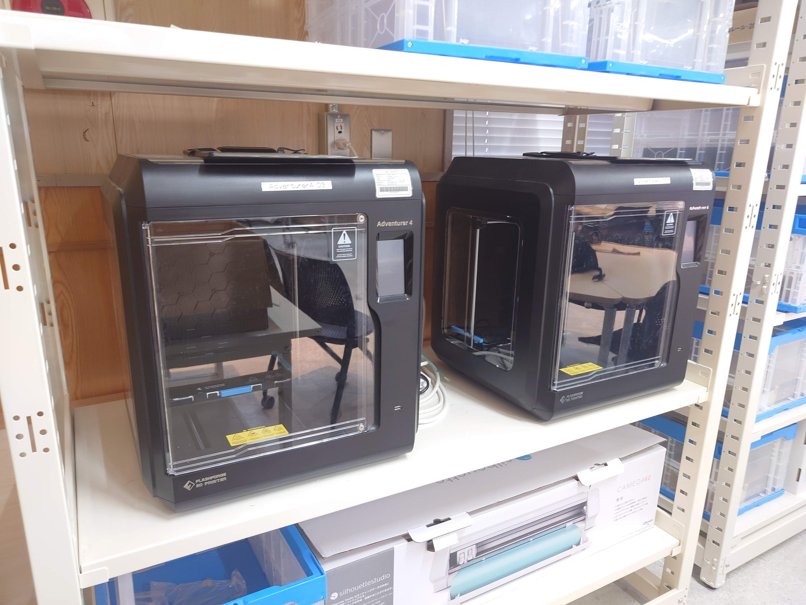
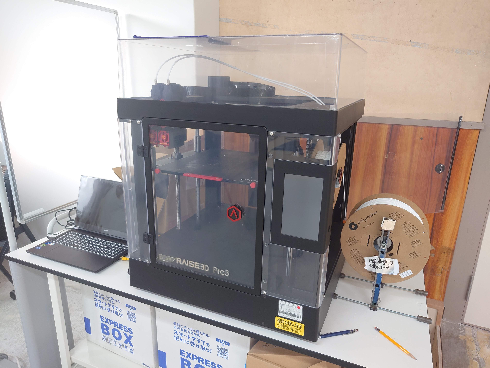

施設紹介

CNC加工機1
高精度な切削加工が可能なCNCマシンです。金属や樹脂の加工に活用しています。

CNC加工機2
多様な形状の部品製作に対応したCNC設備です。学生のアイデアを形にします。

3Dプリンタ
樹脂素材を使った立体造形が可能。試作や研究、ものづくり体験会でも活躍しています。

ボール盤
金属や樹脂に正確な穴あけ加工ができる工作機械です。安全講習の上で利用できます。

3Dプリンタ2
異なる方式の3Dプリンタも導入。より多様な造形ニーズに対応しています。

3Dプリンタ3
複数台の3Dプリンタで同時に造形可能。イベントや授業でも活躍中です。